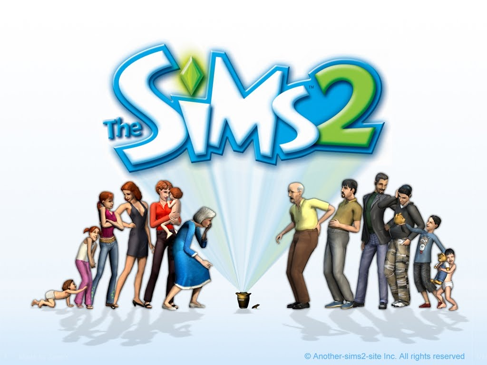
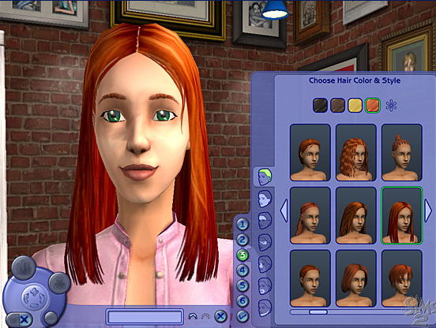
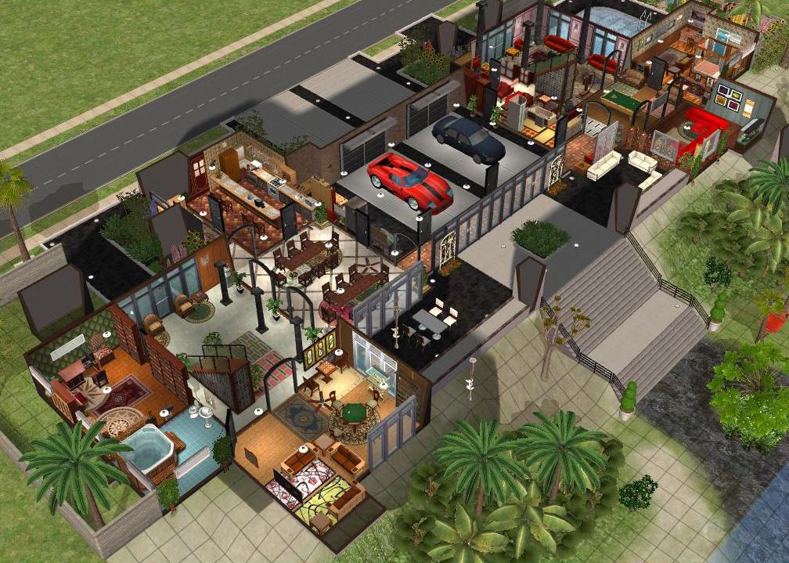
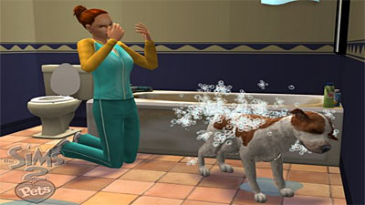

Sjedi 1! - Recenzije PC igara
Nemamo vremena za igranje igara i nismo kompetentne za ocjenjivanje... ali ćemo svejedno to uraditi!
The Sims 2
The Sims 2 je simulacija života i drugi nastavak najpopularnije igre svih vremena, The Sims. Ja kao igrač upravljam izgledom i životima svih likova, nema nekog posebnog drugog cilja. Svaki sims se rodi, odrasta, može da sklopi brak, da ima djecu, stari i umire. Postoji ekstenzija Sims 2 :Pets u kojima je moguće dodati kućne ljubimce. Mapa susjedstva je podjeljena u parcele koje se mogu kupiti ili parcele koje su za cijelu zajednicu.
Moguće je na početku osmisliti izgled Simsa i odrediti mu spol te identitet. Svaki Sim ima svoje osnovne potrebe, glad, udobnost, zabaca, fiziološke potrebe, energija, okoliš i druženje. Neke su potrebe, kao glad, važnije od drugih, kao čistoća. Osim toga, svaki sim ima svoje planove za budućnost, i želje koje se tiču karijere i osobnog života. Sim također napreduje ostvarivanjem želja a nazaduje zbog strahova.
Drugi nastavak je dosta točniji, brži i realniji od prethodnih izdanja igre. Simsi sporije ali dosta realističnije napreduju, uvedena je trudnoća rast novorođenčeta i djece, starenje i smrt. Ipak postoji i dosta fantastičnih elemenata kao što su vanzemaljci, vanzemaljske otmice, muškarci trudni s vanzemaljcima i Social bunnies , zečevi koji se pojavljuju kad je Sim usamljen i ne druži se. Čak je moguće i da se pojavi imaginarni psihotarapeut ako je sim nezadovoljan i neispunjenih želja koji će mu pomoći.
Savjet: ne igrajte dok imate ispite!
Godina izdavanja: 2004
Minimalni sistemski zahtjevi:
- CPU Pentium III 800 MHz
- 265MB RAM-a
- Win 98 / ME / XP
- 3D GPU 32MB
- DirectX 8.1
- 3.5 GB HDD
Ocjena: